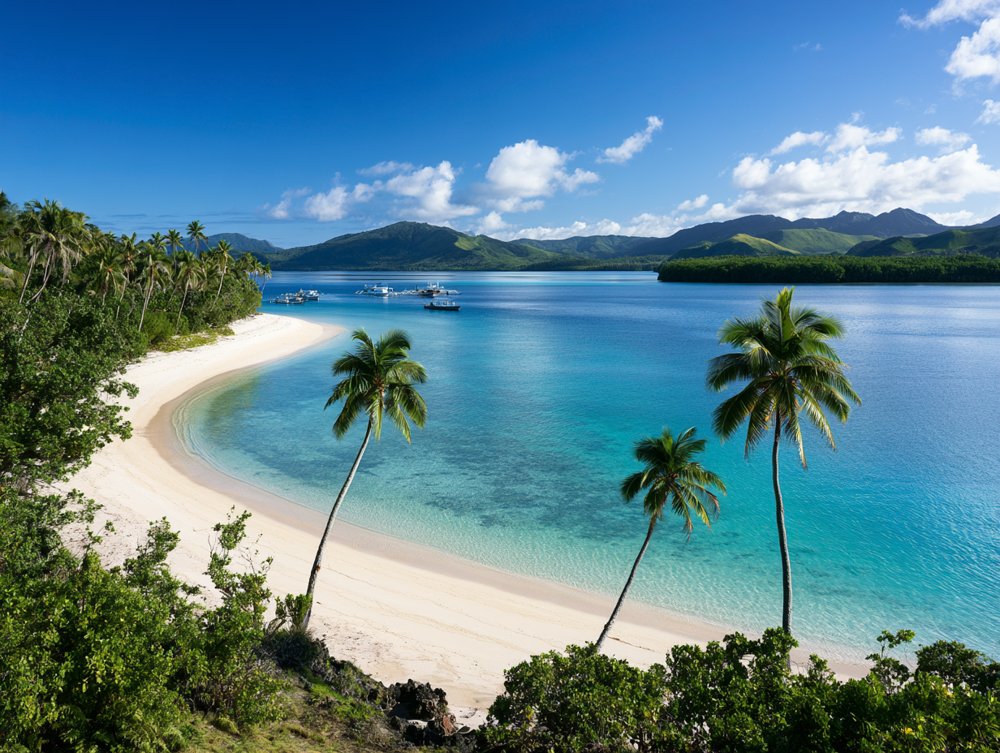
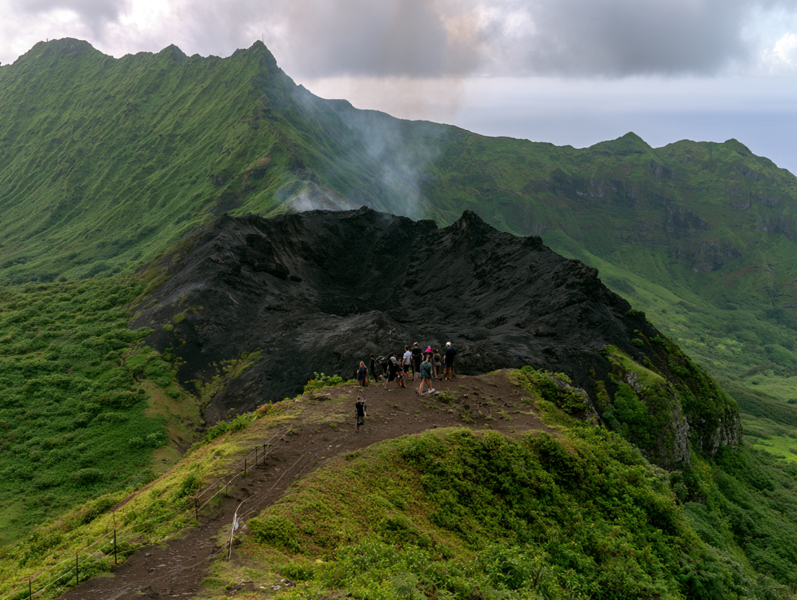
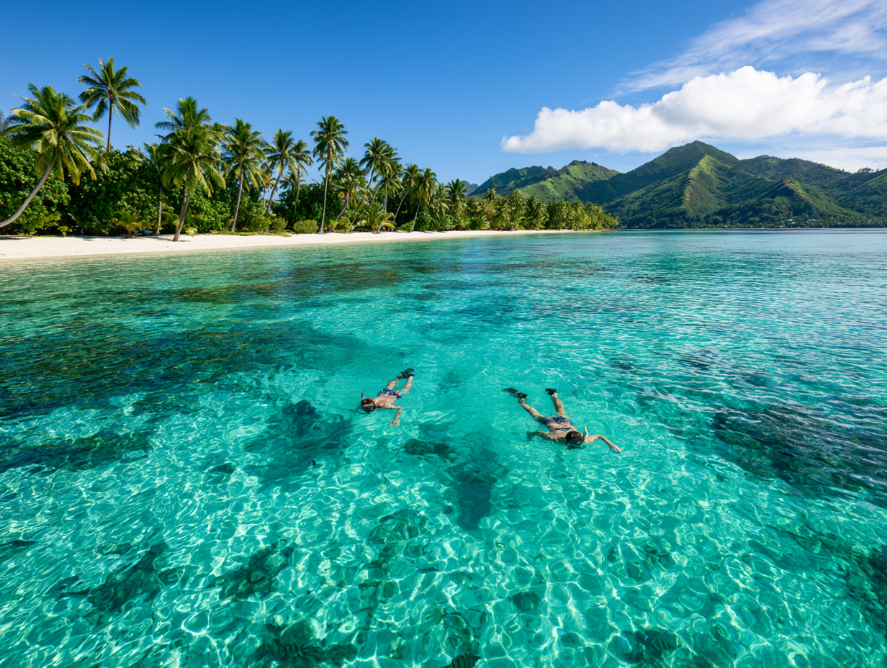
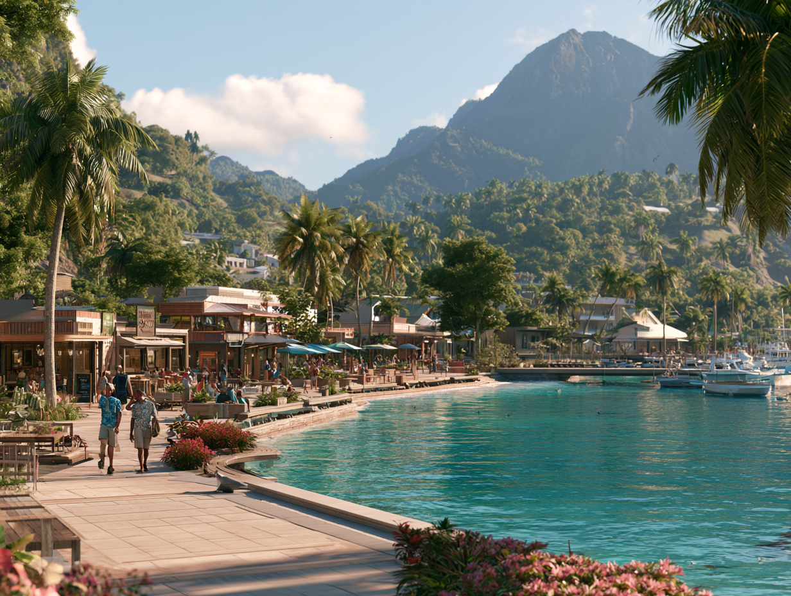

Sightseeing
Taniti City and Yellow Leaf Bay
Most tourists spend most of their time in Taniti City, which boasts native architecture and nearby white, sandy beaches that encircle Yellow Leaf Bay.

Rainforest and Volcano
Other popular activities include boat or bus tours of the island, hikes in the rainforest, or visits to Taniti's active volcano. Visitors can also take helicopter rides or try zip-lining.

Entertainment
Outdoor Activities
Visitors can go on chartered fishing tours, snorkel, zip-line through the rainforest, or take helicopter rides over the island.

Merriton Landing
Visitors can also visit pubs, including a microbrewery, dance at a new dance club, see a movie, visit art galleries, play at an arcade, or go bowling. Many of these activities are located in Merriton Landing on the north side of Yellow Leaf Bay.
